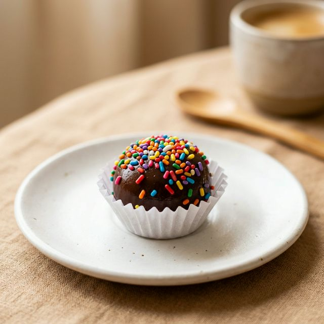

🍴
Sabores do Brasil
Portal de Receitas
Do fogão para a sua mesa
← Voltar às receitas

Sobremesas
★★★★★
Brigadeiro
O doce mais amado do Brasil, feito com leite condensado e chocolate.
⏱
30 min
Tempo
👤
20 unidades
Porções
📊
Fácil
Dificuldade
🔥
130
kcal
🥘 Ingredientes
1 lata de leite condensado (395g)
3 colheres de sopa de cacau em pó
1 colher de sopa de manteiga
Granulado de chocolate a gosto
Forminhas de papel
📝 Modo de Preparo
1
Em uma panela, misture o leite condensado, o cacau em pó e a manteiga.
2
Leve ao fogo médio, mexendo sempre, por cerca de 10–12 minutos.
3
O ponto certo é quando a massa desgruda do fundo da panela.
4
Despeje num prato untado com manteiga e deixe esfriar completamente.
5
Com as mãos untadas, enrole bolinhas e passe no granulado.
6
Coloque nas forminhas e sirva.
🔥 Informação Nutricional
130
kcal / porção
Referência diária: 2.000 kcal
16% da referência diária por porção
⚠️ Alergênicos
leite
glúten